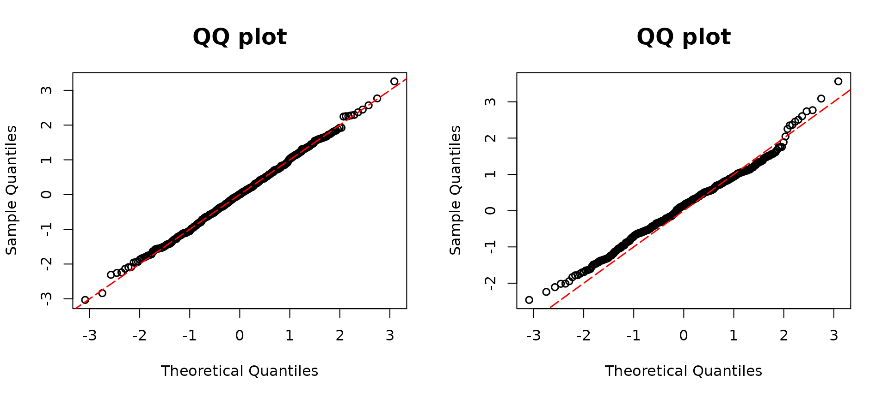

Semicontinuous outcome regression models
resid_semiconti() is used for calculating the DPIT
residuals for regression models with semicontinuous outcomes and
constructing corresponding QQ-plots. Specifically, a Tobit regression
and a Tweedie regression model are suitable models for
resid_semiconti(). The suitable model objects are as
follows:
- Tweedie,
glm(family= tweedie()) - Tobit(VGAM),
VGAM::vglm() - Tobit(AER),
AER::tobit()
We simulate y1 to follow Tweedie distribution depending
on covariates x11 and x12.
## Tweedie model
library(assessor)
library(tweedie)
library(statmod)
n <- 500
x11 <- rnorm(n)
x12 <- rnorm(n)
beta0 <- 5
beta1 <- 1
beta2 <- 1
lambda1 <- exp(beta0 + beta1 * x11 + beta2 * x12)
y1 <- rtweedie(n, mu = lambda1, xi = 1.6, phi = 10)In constructing model2, the intentional omission of the
covariate x12 was aimed at facilitating a direct comparison
with the true model, model1. As expected, the QQ plot in
the right panel corresponding to model2 exhibits a
substantial deviation from the diagonal line, attributing this deviation
to the deliberate omission. Conversely, the left panel shows a closer
alignment along the diagonal, implying a better fit when including both
covariates, x11 and x12. This outcome strongly
suggests that incorporating all covariates results in a more appropriate
and improved model.
# True model
model1 <-
glm(y1 ~ x11 + x12,
family = tweedie(var.power = 1.6, link.power = 0)
)
# missing covariate
model2 <- glm(y1 ~ x11 ,
family = tweedie(var.power = 1.6, link.power = 0)
)
par(mfrow=c(1,2))
resid1 <- resid_semiconti(model1)
resid2 <- resid_semiconti(model2)
resid_semiconti() function supports calculating DPIT
residuals for a Tobit regression from both VGAM::vglm and
AER::tobit packages.
In this example, we assume that the latent variable
follows a normal distribution with a mean given by
where
independently, and
. We observe
if
.
These variables will be employed as inputs for Tobit regression analyses
provided by the VGAM and AER packages.
## Tobit regression model
library(VGAM)
beta13 <- 1
beta14 <- -3
beta15 <- 3
set.seed(123)
x11 <- runif(n)
x12 <- runif(n)
lambda1 <- beta13 + beta14 * x11 + beta15 * x12
sd0 <- 0.3
yun <- rnorm(n, mean = lambda1, sd = sd0)
y <- ifelse(yun >= 0, yun, 0)The model fit1miss, corresponding to the right QQ plot,
intentionally omits the covariate x12. This omission leads to a
deviation from the diagonal line in the QQ plot, observed in the right
panel. Thus, it can be interpreted as the model misspecification. In
contrast, the left panel, corresponding to the model including all
covariates, aligns closely along the diagonal line.
# Using VGAM package
# True model
fit1 <- vglm(formula = y ~ x11 + x12, tobit(Upper = Inf, Lower = 0, lmu = "identitylink"))
# Missing covariate
fit1miss <- vglm(formula = y ~ x11, tobit(Upper = Inf, Lower = 0, lmu = "identitylink"))
par(mfrow=c(1,2))
resid1 <- resid_semiconti(fit1, plot = TRUE)
resid2 <- resid_semiconti(fit1miss, plot = TRUE)
The interpretation remains the same as the VGAM example.
Note that the results from the AER are exactly the same as
those from the VGAM example.
# Using AER package
library(AER)
# True model
fit2 <- tobit(y ~ x11 + x12, left = 0, right = Inf, dist = "gaussian")
# Missing covariate
par(mfrow=c(1,2))
fit2miss <- tobit(y ~ x11, left = 0, right = Inf, dist = "gaussian")
reisd1 <- resid_semiconti(fit2, plot = TRUE)
resid2 <- resid_semiconti(fit2miss, plot = TRUE)